온실가스관리기사 (2019-04-27 기출문제)
1과목: 기후변화개론
1. 다음은 기후변화관련 국제적 기구에 관한 설명이다. ( )안에 가장 적합한 것은?
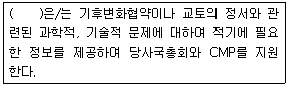
- SBSTA
- SBI
- BAU
- CCICCI
(정답률: 90%)

2. 기후변화로 인한 해수면 상승이 직접 원인이 되어 나타나는 현상과 가장 거리가 먼 것은?
- 해안습지 감소
- 환경난민 발생
- 강수량 변화
- 전통생활방식의 위협
(정답률: 80%)
3. 다음 중 칸쿤 합의 주요내용과 거리가 먼 것은?
- 개도국은 2020년 BAU 배출량 대비 감축을 달성하기 위해 감축행동(NAMA)을 취하며, 이 NAMA는 기후변화 협약 트랙의 참고문서에 수록
- 단기재원으로 2010~2012년간 300억 달러에 접근하는 재원을 제공하는 선진국의 집단적 의무에 유념
- 기술개발 및 이전을 촉진하기 위해 기술메커니즘을 설립
- CDM 흡수원 관련 사업에 대한 기술적 규정, 기후변화 특별기금, 최빈국 운영지침서 등합의
(정답률: 54%)
4. 저탄소 녹색성장 기본법령에 따른 우리나라 현행 국가 온실가스 감축 목표에 해당하는 것은?(관련 규정 개정전 문제로 여기서는 기존 정답인 4번을 누르면 정답 처리됩니다. 자세한 내용은 해설을 참고하세요.)
- 2020년 BAU 대비 20%까지 감축
- 2030년 BAU 대비 25%까지 감축
- 2020년 BAU 대비 35%까지 감축
- 2030년 BAU 대비 37%까지 감축
(정답률: 78%)
5. 다음 중 기후를 결정하는 가장 중요한 외부요인은?
- 태양복사에너지
- 인간의 소비패턴 변화
- 생태계의 변화
- 물과 탄소 순환
(정답률: 89%)
6. 1988년 세계기상기구와 유엔환경계획이 공동 설립하였고, 보고서를 통해 기후변화 추세, 원인, 영향, 대응을 분석한 국제기구의 이름으로 가장 적합한 것은?
- WHO
- IPCC
- UNFCC
- GCF
(정답률: 83%)
7. IPCC 국가 온실가스 인벤토리 작성을 위한 가이드라인에 관한 설명으로 거리가 먼 것은?
- 모든 국가에 일괄적으로 적용될 수 있는 표준 인벤토리 작성 지침서를 개발하여 모든 국가들이 이 지침에 준하여 인벤토리를 작성하고 UNFCCC에 보고할 수 있도록 하고 있다.
- 국가 온실가스 인벤토리에 관한 작업을 통해 유엔기후변화협약을 지원하는 활동의 일환으로 작성된 것이다.
- 상향식 배출량 산정 접근방법론을 이용하여 지자체별 인벤토리 작성을 위해 개발된 것이다.
- 다양한 변수와 배출계수의 기본값을 제공하고 이보다 더 많은 정보와 자원을 가진 국가의 경우 국가간 적합성, 비교 가능성, 일관성을 유지하면서 구체적인 국가별 방법론을 사용할 수 있도록 하였다.
(정답률: 88%)
8. 우리나라의 1990년 대비 2011년 온실가스 배출량 증가율이 가장 컸던 분야는?
- 에너지
- 산업공정
- 농업
- 폐기물
(정답률: 88%)
9. 지구 대기 중 메탄(CH4)농도 증가와 가장 관련이 없는 것은?
- 산림 벌채
- 화석 연료의 사용
- 가축 증가
- 벼 농사
(정답률: 70%)
10. 다음은 세계 주요도시의 녹색추진운동 사례이다. 가장 적합한 도시는?
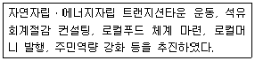
- 토트네스(영국)
- 서튼(영국)
- 마스다르(아랍에미리트)
- 함마르비 허스타드(스웨덴)
(정답률: 80%)
11. 우리나라 안면도에서 1999~2009년까지 측정하여 분석된 이산화탄소 배출특성과 거리가 먼 것은? (단, 전 지구적인 농돗값은 마우나로아에서의 측정값 기준)
- 계절별로 진폭은 다르지만 뚜렷한 일변동 특성을 보이는 경향이 있다.
- 일변동 폭은 여름에 아주 크고, 겨울에 아주 낮다.
- 우리나라는 전 지구적인 이산화탄소 농도증가율보다 높은 편이다.
- 일변동 최고농도가 나타나는 시간은 15~17시 사이이다.
(정답률: 62%)
12. 인위적인 지구온난화 현상에 대한 논란에 관한 내용으로 가장 거리가 먼 것은?
- 윌리엄 루디만은 지구는 중세 소빙기 이래 빙하기로 가는 추세에 있는데 현재 인위적인 요인에 의해 온난화 현상이 일어나고 있다고 본다.
- 윌리엄 루디만은 약 2만 년 전부터 시작되었던 간빙기가 약 8천 년 전에 끝나고, 자연적인 기후변화 추이는 다시 장기적인 빙하기를 향하고 있다고 한다.
- 제임스 러브록은 현재 지구는 오랜 빙하기에서 간빙기로 이행하고 있으며 태양도 보다 더 뜨거워지고 있다고 한다.
- 인위적 요인에 의한 지구온난화 주장에 대해 회의적인 견해를 표명하거나 지구가 더워지고 있다는 사실 그 자체에 대해서 반대하는 견해는 전혀없다.
(정답률: 87%)
13. 기후변화 관련 국제기구 중 세계환경보전 모니터링센터를 의미하는 것으로, 세계보전연맹(WCU), 유엔환경계획(UNEP), 세계야생생물기금(WWF) 세계기구가 세계의 생태환경보전을 위해 공동으로 설립한 국제기구에 가장 부합하는 것은?
- UNIDO
- WCMC
- GEO
- UNFCCC
(정답률: 72%)
14. 선진국과 개도국이 모두 참여하는 Post-2012 체제 구축을 합의한 회의는?
- 제7차 당사국총회(마라케쉬 총회)
- 제8차 당사국총회(뉴델리 총회)
- 제9차 당사국총회(밀라노 총회)
- 제13차 당사국총회(발리 총회)
(정답률: 85%)
15. 국가 온실가스 인벤토리 보고서(NIR)를 기준으로 국내 5가지 온실가스 배출분야에서 일반적으로 배출량이 가장 많은 분야는?
- 산업공정
- 에너지
- 폐기물
- LULUCF
(정답률: 66%)
16. 기후변화에 관한 정부간 협의체(IPCC)가 3개의 실행그룹에서 다루는 분야로 거리가 먼 것은?
- 기후변화 과학
- 배출량 거래제
- 기후변화 영향평가, 적응 및 취약성
- 배출량 완화, 사회 경제적 비용-편익분석 등 정책
(정답률: 91%)
17. ISO 14064-3(온실가스 선언에 대한 타당성 평가 및 검증을 위한 사용규칙 및 지침)에서 온실가스 검증의 원칙과 그에 관한 설명으로 가장 거리가 먼 것은?
- 독립성 : 편견 및 이익에 대한 마찰이 없도록 독립성 유지, 객관적 증거를 기초하여 작성되어 객관성 유지
- 공정성 : 검증활동의 결과, 보고를 정확하고 신뢰할 수 있게 반영
- 전문가적 책임 : 전문가적 책임을 다함 및 충분한 숙련도와 적격성을 갖출 것
- 협조성 : 의사결정을 할 수 있도록 충분하고 적절한 온실가스 관련 정보를 공개
(정답률: 72%)
18. 지구 기후변화의 자연적인 관련 요인으로 가장 거리가 먼 것은?
- 가축의 증가
- 지구의 태양순환 주기
- 해양 해류흐름의 변화
- 몬순 현상
(정답률: 89%)
19. 유엔기후변화협약의 기본원칙으로 가장 거리가 먼 것은?
- 공동의 차별화된 책임 및 부담
- 개도국의 특수 사정 배려
- 기후변화 대응의 효과가 큰 특정 국가 중심의 지속가능한 성장 보장
- 기후변화의 예방적 조치 시행
(정답률: 79%)
20. 신기후체제에 대한 설명 중 가장 거리가 먼 것은?
- 교토의정서 체제가 만료되는 2020년 이후를 대체하는 새로운 기후변화 체제의 필요성에 의하여 출범하게 되었다.
- 교토의정서 체제의 경우에는 주요 선진국에 한하여 감축의무를 부여했지만 신기후체제에서는 개도국을 포함하는 대부분의 국가가 감축의무를 부담한다.
- 핵심 이슈는 장기 지구기온 목표, 미국 및 주요 개도국의 감축 의무 참여 여부, 국가별 감축의무 방식 유연성 확대 등이다.
- 각 당사국의 감축목표 설정과 이행관리는 단기목표설정방식이고, 하양식 강제의무할당과 이행결과에 따라 패널티를 부여하는 방식이다.
(정답률: 80%)
2과목: 온실가스 배출의 이해
21. 온실가스ㆍ에너지 목표관리 운영 등에 관한 지침상 폐기물 소각의 보고대상 배출시설에 해당하지 않는 것은?
- 폐열 보일러
- 적축물 소각시설
- 폐가스 소각시설
- 폐수 소각시설
(정답률: 68%)
22. 온실가스ㆍ에너지 목표관리 운영 등에 관한 지침상 “부생연료 2호”에 해당하는 내용이 아닌 것은?
- 등유ㆍ중유 성상에 해당하는 제품으로 열효율은 보일러등유와 중유의 중간정도이다.
- 방향족 성분의 다량 함유로 일부 제품은 냄새가 심하며 연소성이 척도인 10% 잔류탄소분이 매우 높으므로 그을음 발생으로 집진시설을 설치해야 한다.
- 석유화학제품을 생산하는 전처리과정에서 나오는 제품으로 생산업체에 따라 물성이 다양하며, 보일러등유, 경유, 중유 등 액체연료를 사용하는 열원 공급시설(산업용보일러 등)의 연료계통 부품을 교체하며 대체연료로 사용된다.
- 부생연료 2호 사용에 따른 고정연소 배출활동의 경우, 산정등급 1(Tier 1) CO2배출 계수는 등유계수를 활용하여 온실가스 배출량을 산정한다.
(정답률: 58%)
23. 온실가스ㆍ에너지 목표관리 운영 등에 관한 지침상 고정연소(고체연료) 보고대상 배출시설 중 일반보일러 시설에 관한 설명으로 옳지 않은 것은?
- 수관식보일러는 작은 직경의 드럼과 여러개의 수관으로 나누어져 있으며, 수관 내에서 증발이 일어나도록 되어 있다.
- 원통형보일러는 구멍이 큰 원통을 본체로 하여 그 내부에 노통화로, 연관 등을 설치한 것으로 구조가 복잡하고, 고압용이나 대용량에 적합하다.
- 수관식보일러는 고압, 대용량에 적합하며, 종류에는 자연순환식, 강제순환식, 관류식 등이 있다.
- 주철형보일러는 주로 난방용의 저압증기 발생용 또는 온수보일러로 사용되고 있다.
(정답률: 68%)
24. 다음 중 온실가스ㆍ에너지 목표관리 운영 등에 관한 지침상 합금철 생산공정에서 온실가스의 주된 배출시설은?
- 전기아크로
- 배소로
- 소결로
- 전해로
(정답률: 50%)
25. 온실가스ㆍ에너지 목표관리 운영 등에 관한 지침상 석유화학제품 생산의 보고대상 배출시설과 가장 거리가 먼 것은?
- 수소 제조시설
- 테레프탈산(TPA) 생산시설
- 에틸렌옥사이드(EO) 반응시설
- 카본블랙(CB) 반응시설
(정답률: 73%)
26. 온실가스ㆍ에너지 목표관리 운영 등에 관한 지침상 철강생산의 배출활동에 관한 설명으로 거리가 먼 것은?
- 철강공정에서의 주요 배출원은 코크스로, 소결로 및 석회 소성로에서 원료 중 탄소성분에 의해 발생되는 CO2로 구분할 수 있다.
- 주요 배출원에서 생산된 제품은 고로에 원료로ㅆ 재투입되며 연소에 의해 다시 대기 중으로 배출된다.
- 일관제철 공정 중 코크스로, 고로 및 전로에서 발생되는 공정 부생가스는 각각 코크스 오븐가스(COG), 고로가스(BFG), 전로가스(LDG)라고 부르며, 중앙관리시스템에서 회수하여 일관제철 공정 중 주요 시설에 연료로써 재공급된다.
- 코크스로, 고로 및 전로 시설에서 직접적으로 대부분의 배기가스가 대기중으로 배출되며, 이 배기가스는 연료 재순환 없이 직접 연료연소에 의한다.
(정답률: 73%)
27. 각 탄산염에 따른 광물명의 연결로 옳지 않은 것은?
- MgCO3: 마그네사이트
- CaMgㆍ(CO3)2: 백운석
- Na2CO3: 소다회
- CaCO3: 능철광
(정답률: 76%)
28. 온실가스ㆍ에너지 목표관리 운영 등에 관한 지침상 이동연소(도로) 부분의 온실가스 배출량 산정 시 필요한 자료와 거리가 먼 것은?
- 연료의 열량계수
- 연료의 생산지
- 연료의 사용량
- 연료에 따른 온실가스의 배출계수
(정답률: 88%)
29. 온실가스ㆍ에너지 목표관리 운영 등에 관한 지침상 석유정제활동(석유정제공정)의 온실가스 배출활동을 분류한 것으로 가장 거리가 먼 것은?
- 원유 예열시설, 증류공정 등에 열을 공급하기 위한 고정연소배출
- 수소제조공정, 촉매재생공정 및 코크스 제조공정 등 공정배출원
- 그 밖에 공정 중에서 배기(venting) 및 폐가스 연소처리(flaring) 등 탈루성 배출
- 산ㆍ알칼리 조정을 위한 미세 활성탄 흡착처리시설
(정답률: 67%)
30. 다음은 온실가스ㆍ에너지 목표관리 운영 등에 관한 지침 암모니아 생산시설 중 “암모니아 합성공정”에 관한 설명이다. ( )안에 가장 적합한 것은?
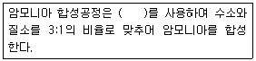
- 고온ㆍ고압에서 Fe 촉매
- 고온ㆍ저압에서 Pt 촉매
- 저온ㆍ저압에서 Ne 촉매
- 상온ㆍ상압에서 Cd 촉매
(정답률: 71%)
31. 다음 ( )안에 가장 적합한 내용은?
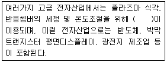
- 백금화합물
- 질소화합물
- 불소화합물
- 구리화합물
(정답률: 85%)
32. 온실가스ㆍ에너지 목표관리 운영 등에 관한 지침상 외부에서 공급된 전기사용에 대해 보고대상 온실가스를 모두 옳게 나열한 것은?
- CO2
- CO2, CH4
- CH4, N2O
- CO2, CH4, N2O
(정답률: 71%)
33. 다음 중 A사업장과 B사업장의 온실가스 배출량 산정에서 제외되는 경우는?
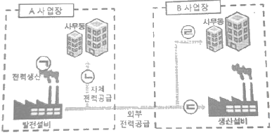
- ㉠
- ㉡
- ㉢
- ㉣
(정답률: 87%)
34. 온실가스ㆍ에너지 목표관리 운영 등에 관한 지침상 카바이드 생산 공정의 보고대상 온실 가스로만 모두 옳게 나열된 것은?
- N2O
- CH4, N2O
- CO2, N2O
- CO2, CH4
(정답률: 54%)
35. 온실가스ㆍ에너지 목표관리 운영 등에 관한 지침상 이동연소(항공)의 배출활동에 관한 설명으로 옳지 않은 것은?
- 최신 기술이 적용된 항공기가 보다 많은 CH4와 N2O를 배출한다.
- 항공기 엔진의 연소가스 중 CO2는 대략 70% 전후이다.
- 항공기에서 배출되는 오염물질의 90% 가량이 높은 고도에서 발생한다.
- 항공 부문의 보고대상 배출시설 중 국제선운항(국제벙커링)에 따른 온실가스 배출량 등은 산정ㆍ보고에서 제외한다.
(정답률: 58%)
36. 온실가스ㆍ에너지 목표관리 운영 등에 관한 지침상 이동연소(선박)의 배출원별 보고대상 적용범위에 관한 설명으로 옳지 않은 것은?
- 수상항해 : 호버크라프트(Hovercraft)와 수중익선(Hydrofoils)을 포함한다.
- 수상항해 : 국제/국내 항해의 구분은 출발, 경유, 도착항을 기준하며, 어선을 포함한다.
- 국내항해 : 동일 국가 내에서 출항 및 입항하는 모든 석박으로부터의 배출(어업과 군용은 제외)을 의미한다.
- 어선 : 어업의 경우 그 나라 안에서 연료보급이 이루어진 모든 국적의 선박을 포함한다.
(정답률: 57%)
37. 온실가스ㆍ에너지 목표관리 운영 등에 관한 지침상 연료에 관한 설명으로 옳지 않은 것은?
- “촐발열량”이란 연료의 연소과정에서 발생하는 수증기의 잠열을 포함한 발열량을 말한다.
- 에너지사용량을 집계할 경우 순발열량을 사용한다.
- Nm3은 0℃, 1기압 상태의 단위체적(세제곱미터)을 말한다.
- MJ=106J
(정답률: 60%)
38. 온실가스ㆍ에너지 목표관리 운영 등에 관한 지침상 아디프산을 합성하는 방법 중 하나인 Farbon 법에 관한 설명으로 옳지 않은 것은?
- 시클로헥산을 산화하여 시클로헥산올과 시클로헥사논을 만들고, 이 시클로헥산올과 시클로헥사논을 다시 산화하여 아디프산을 만든다.
- 이 과정에서 촉매도 사용된다.
- 제2반응기로부터 생성물이 표백기로 들어가고 용존 NOx가스는 공기와 수증기로 인해 아디프산 및 질산 용액으로부터 탈기된다.
- 부산물의 생성이 없고, 아디프산 및 질산용액은 증류되어 최종산물(결정)이 된다.
(정답률: 79%)
39. 온실가스ㆍ에너지 목표관리 운영 등에 관한 지침상 석회생산의 배출활동 개요와 보고대상 배출시설에 관한 설명으로 옳지 않은 것은?
- 석회 제조 공정은 시멘트 공정과 유사하게 소성 공정에서 석회석 혹은 Dolomite 등 원료의 탈탄산 반응에 의하여 온실가스가 배출된다.
- 연수를 위한 소석회의 사용은 CO2와 석회의 반응으로 탄산칼슘(CaCO3)을 재생성하여 대기 중으로 모든 CO2를 순배출 시킨다.
- 석회가 생산되는 동안 석회 킬른먼지(LKD)가 생성되며, 이는 배출량 산정 시 고려되어야 한다.
- 소성시설(kiln)은 석회 생산 공정의 보고대상 배출시설이다.
(정답률: 60%)
40. 온실가스ㆍ에너지 목표관리 운영 등에 관한 지침상 아연생산 배출활동 중 전해로와 관련된 설명으로 옳지 않은 것은?
- 주로 비철금속 계통의 물질을 용융시키는데 이용되며 대표적인 것으로 알루미늄전해로가 있다.
- 알루미늄 전해로의 경우 빙정석이 사용된다.
- 전해로는 전해질용액이나 용융전해질 등의 이온전도체에 전류를 통해서 화학변화를 일으키는 로를 말한다.
- 보통 로내 온도는 1500~1800℃정도이며, 알루미늄은 양극 쪽으로 모이게 되어 욕조의 표면 상부에 용융된 상태로 존재한다.
(정답률: 60%)
3과목: 온실가스 산정과 데이터 품질관리
41. 온실가스ㆍ에너지 목표관리 운영 등에 관한 지침상 굴뚝연속자동측정기에 의한 배출량 산정방법 중 측정에 기반한 온실가스 배출량 산정은 어떤 값을 기반으로 하여 산출하는가?
- 건가스 기준의 30분 CO2 부피 평균농도(%)를 사용하여 산정
- 습가스 기준의 30분 CO2 부피 평균농도(%)를 사용하여 산정
- 건가스 기준의 10분 CO2 부피 평균농도(%)를 사용하여 산정
- 습가스 기준의 10분 CO2 부피 평균농도(%)를 사용하여 산정
(정답률: 78%)
42. 온실가스ㆍ에너지 목표관리 운영 등에 관한 지침상 비선택적 촉매환원법을 사용하여 질산 350t을 생산하였다. 이 때 발생되는 온실가스 배출량(tCO2-eq)은?
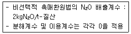
- 156
- 217
- 340
- 412
(정답률: 73%)
43. 온실가스ㆍ에너지 목표관리 운영 등에 관한 지침상 하수 처리할 때, 필요한 자료와 거리가 먼 것은?
- 방류수의 BOD5농도(mg-BOD/L)
- 유입수의 유량(m3)
- 메탄 회수량(tCH4)
- 반송 슬러지의 Pt 농도(mg-Pt/L)
(정답률: 63%)
44. 온실가스ㆍ에너지 목표관리 운영 등에 관한 지침상 온실가스 배출활동별 산정방법론에 따른 보고대상 온실가스의 연결로 옳지 않은 것은?
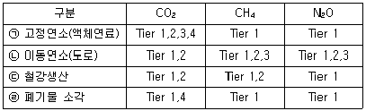
- ㉠
- ㉡
- ㉢
- ㉣
(정답률: 52%)
45. 다음 Scope 분류 및 그에 대한 배출활동이 잘못 연결된 것은?
- Scope 1 : 이동연소, 철강생산, 공공하수처리
- Scope 1 : 폐기물 소각, 고정연소, 시멘트생산
- Scope 2 : 구입 증기, 구입 전기, 구입 열
- Scope 3 : 종업원 출퇴근, 구매된 원료의 생산 공정배출, 공장 내 기숙사 난방
(정답률: 80%)
46. 온실가스ㆍ에너지 목표관리 운영 등에 관한 지침에 의거, 배출량 보고와 관련한 위험을 완화하는 일련의 활동을 내부 감사(internal audit)라 하며, 할당 대상업체는 매년 배출량 산정ㆍ보고 철자와 관련한 내부감사 활동을 실시하고 이를 평가하여 주기적으로 이를 개선해야 한다. 다음 중 배출량 보고와 관련한 위험으로 거리가 먼 것은?
- 고유 위험
- 통제 위험
- 인적 위험
- 오류 및 누락
(정답률: 62%)
47. 온실가스ㆍ에너지 목표관리 운영 등에 관한 지침상 상거래 또는 증명에 사용하기 위한 목적으로 측정량을 결정하는 법정계량에 사용하는 측정기기를 표시하는 기호는?
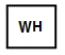
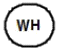
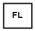
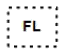
(정답률: 82%)
48. 온실가스ㆍ에너지 목표관리 운영 등에 관한 지침상 이동연소(항공)온실가스 배출량 산정을 위한 LTO에 설명으로 가장 적합한 것은?
- 항공기 운항 중 순항단계를 의미한다.
- 항공기 운항 중 이착륙단계를 의미한다.
- 항공기 운항 중 국제선 운항을 의미한다.
- 항공기 운항 중 국내선 운항을 의미한다.
(정답률: 78%)
49. 온실가스ㆍ에너지 목표관리 운영 등에 관한 지침상 굴뚝연속자동측정방법에 따른 배출량의 실시간 측정자료를 전자적 방식으로 해당 관장기관에게 제출해야 하는데, 이 실시간 측정자료에 해당하지 않는 것은?
- CO2 농도
- 배출가스 유량
- 배출구 온도
- 배출구 습도
(정답률: 78%)
50. 다음은 온실가스ㆍ에너지 목표관리 운영 등에 관한 지침상 불확도 산정절차 및 방법에 관한 사항이다. ( )안에 가장 적합한 것은?
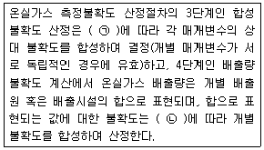
- ㉠ 승산법, ㉡ 가감법
- ㉠ 가감법, ㉡ 승산법
- ㉠ 확장법, ㉡ 가감법
- ㉠ 표준법, ㉡ 승산법
(정답률: 68%)
51. A관리업체 하수를 다음과 같은 조건에서 처리하고자 할 때 N2O 배출에 따른 온실가스 연간 배출량에 가장 가까운 값은? (단, 온실가스ㆍ에너지 목표관리 운영 등에 관한 지침기준, 반출슬러지는 고려하지 않는다.)
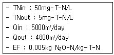
- 200tCO2-eq/yr
- 300tCO2-eq/yr
- 400tCO2-eq/yr
- 500tCO2-eq/yr
(정답률: 38%)
52. 온실가스ㆍ에너지 목표관리 운영 등에 관한 지침상 “배출량 산정(명세서 작성 등)과정에 직접적으로 관여하지 않은 사람에 의해 수행되는 검토 절차의 계획된 시스템”을 의미하는 것은?
- 품질관리(QC)
- 품질보증(QA)
- 리스크분석
- 불확도산정
(정답률: 78%)
53. 온실가스ㆍ에너지 목표관리 운영 등에 관한 지침에서 사용하는 용여의 정의로 옳지 않은 것은?
- “검증”이란 온실가스 배출량과 에너지소비량의 산정과 조기감축실적 및 외부감축실적의 산정이 이 지침에서 정하는 절차와 기준 등에 적합하게 이루어졌는지를 검토ㆍ확인하는 체계적이고 문서화된 일련의 활동을 말한다.
- “배출시설”이란 온실가스를 대기에 배출하는 시설물, 기계, 기구, 그 밖의 물체로서 각가의 원료(부원료와 첨가제를 포함한다)나 연료가 투입되는 지점부터의 해당 공정 전체를 말한다.
- “이산화탄소 상당량”이란 이산화탄소에 대한 온실가스의 복사 강제력을 비교하는 단위로서 해당 온실가스의 양에 지구온난화지수를 나누어 산출한 값을 말한다.
- “벤치마크”란 온실가스 배출 및 에너지소비와 관련하여 제품생산량 등 단위 활동자료 당 온실가스 배출량 등의 실적ㆍ성과를 국내ㆍ외 동종 배출시설 또는 공정과 비교하는 것을 말한다.
(정답률: 56%)
54. 온실가스ㆍ에너지 목표관리 운영 등에 관한 지침상 연료의 경우 분석항목에 따른 시료의 최소 분석주기를 만족하여야 하는데, 다음 중 시료의 최소 분석주기 기준의 연결로 옳지 않은 것은?
- 고체연료(원소함량 분석) - 월 1회 또는 연료 입하 시 (더운 짧은 주기)
- 액체연료(원소함량 분석) - 분기 1회 또는 연료 입하 시 (더욱 짧은 주기)
- 기체연료 중 천연가스, 도시가스(가스성분 분석) - 연 1회 또는 연료 입하 시
- 기체연료 중 공정부생가스(가스성분 분석) - 월 1회
(정답률: 78%)
55. 온실가스ㆍ에너지 목표관리 운영 등에 관한 지침상 배출활동별, 시설규모별 산정등급 최소 적용기준 등에 대한 다음 설명 중 옳지 않은 것은?
- Tier 3은 사업자가 사업장ㆍ배출시설 및 감축기술단위의 배출계수 등 상당부분 시험ㆍ분석을 통하여 개발하거나 공급자로부터 제공받은 매개변수의 값을 활용하는 배출량 산정방법론이다.
- 신설되는 배출시설규모 결정시 신설되는 배출시설의 예상 온실가스 배출량을 계산하여 그 값에 따라 시설규모를 결정한다.
- 해당 배출시설에서 여러 종류의 연료를 사용하는 경우에는 각각의 연료별 사용에 따른 배출량의 총합으로 배출시설규모 및 산정등급을 결정하여야 한다.
- 배출시설규모 최초결정이후 매년 7월 1일을 기준으로 제출된 명세서의 해당시설 온실가스 배출량에 따라 시설규모를 결정하며, 산정은 최근 5개년도 명세서 자료를 활용한다.
(정답률: 85%)
56. 온실가스ㆍ에너지 목표관리 운영 등에 관한 지침상 아디프산 생산량이 320t일 때(감축기술은 촉매분해방법 적용), 발생되는 온실가스 배출량(tCO2-eq)은?
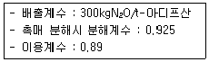
- 3458.07
- 3874.92
- 4338.02
- 5260.08
(정답률: 28%)
57. 온실가스ㆍ에너지 목표관리 운영 등에 관한 지침상 고정연소시설에서 고체연료를 연소할 때 매개변수별 관리기준에 대한 설명 중 옳지 않은 것은?
- 연료사용량의 측정불확도는 Tier 2 수준에서 ±5.0%이내의 연료사용량 자료를 활용한다.
- Tier 2 수준에서 발전부문의 산화계수는 0.99를 적용한다.
- Tier 2 수준에서 기타부문은 산화계수 1.0을 적용한다.
- 연료사용량의 측정불확도는 Tier 3 수준에서 ±2.5%이내의 연료사용량 자료를 활용한다.
(정답률: 78%)
58. 온실가스ㆍ에너지 목표관리 운영 등에 관한 지침상 고정연소에 사용되는 고체연료에서 발생되는 온실가스 배출량을 산정하기 위해 Tier 3 방법론에 따라 배출계수를 개발하여 사용할 경우, 배출계수 개발에 대한 내용으로 옳지 않은 것은?
- CO2 배출계수는 연료 중 탄소의 질량분율에 비례한다.
- 탄소 배출계수는 연료의 열량계수에 반비례한다.
- CO2 배출계수는 연료의 순발열량에 반비례한다.
- 탄소 배출계수는 CO2 배출계수와 동일하다.
(정답률: 72%)
59. 온실가스 배출권거래제 운영을 위한 검증지침에서 각 리스크를 분류한 설명으로 옳지 않은 것은?
- 고유리스크 : 검증대상의 사업 자체가 가지고 있는 리스크(사업의 특성 및 산정방법의 특수성)
- 상대리스크 : 검증대상 시설의 공정이 복잡하여 검증심사원이 전문지식이 부족하여 오류를 적발하지 못할 리스크
- 통제리스크 : 검증대상 내부의 데이터 관리구조상 오류를 적발하지 못한 리스크
- 검출리스크 : 검증팀이 검증을 통해 오류를 적발하지 못할 리스크
(정답률: 70%)
60. 온실가스ㆍ에너지 목표관리 운영 등에 관한 지침상 질산 생산 공정에서의 온실가스 배출량 산정방법에 대한 설명으로 옳지 않은 것은?
- 보고 대상 온실가스는 N2O 1가지 이다.
- 감축기술별 분해계수(DFh)는 활용 가능한 값이 없으면 “1”을 적용한다.
- 활동자료로 질산 생산량 자료를 사용한다.
- 고압력 공장의 기본 배출계수(N2O 배출계수, (100% Pure acid)) 는 9kgN2O/t-질산이다.
(정답률: 52%)
4과목: 온실가스 감축관리
61. 온실가스ㆍ에너지 감축 목표의 설정 및 관리를 위한 감축목표 설정의 원칙과 가장 거리가 먼 것은?
- 목표의 설정 방법과 수준 등은 관리업체가 예측할 수 있도록 가능한 범위에서 사후에 공표되어야 한다.
- 목표의 협의 및 설정은 다수 이해관계자들의 신뢰를 확보할 수 있도록 투명하게 진행되어야 한다.
- 관리업체의 과거 온실가스 배출량과 에너지 사용량의 이력을 적절하게 바영하여야 한다.
- 관리업체의 신ㆍ증설 계획과 국제경쟁력 등을 적절하게 고려하여야 한다.
(정답률: 70%)
62. 시멘트 생산 시 에너지 소비효율 개선을 위한 온실가스 감축방법 및 기술과 가장 거리가 먼 것은?
- 원료 수분 함량 감소
- 원료 전처리 분쇄공정 도입
- 예열기 설치
- 클링커 함량 증대
(정답률: 67%)
63. 다음 중 우리나라에서 정한 신ㆍ재생에너지와 가장 거리가 먼 것은?
- 폐기물에너지
- 연료전지
- 석탄 액화ㆍ가스화 에너지
- 산소에너지
(정답률: 67%)
64. 기존의 화석연료를 변환시켜 이용하거나 햇빛, 물, 지열, 강수, 생물유기체 등을 포함하는 재생 가능한 에너지를 변환시켜 이용하는 에너지를 신ㆍ재생에너지라고 부르는데, 다음중 신에너지에 해당하지 않는 것은?
- 연료전지(Fuel Cell)
- 중질잔사유를 가스화한 에너지
- 수소에너지
- 폐기물에너지
(정답률: 73%)
65. 외부사업에 대한 타당성 평가 및 감축량 인증과 상쇄등록부에 관한 구체적인 사항과 절차를 청하기 위해 필요한 사항 중 다음 설명에 가장 적합한 것은?
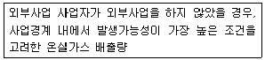
- 배출권 할당량
- 베이스라인 배출량
- 상쇄배출권 계정
- 외부사업 인증실적
(정답률: 77%)
66. 다음 온실가스 감축방법 중 간접 감축방법에 해당하는 것은?
- 온실가스 배출량이 많은 공정에 대한 배출이 적거나 없는 대체 공정
- 신재생에너지를 도입 적용하여 배출원의 온실가스 배출을 상쇄
- 온실가스를 재활용 또는 다른 목적으로 활용
- GWP가 높은 온실가스를 낮은 온실가스로 전환
(정답률: 46%)
67. 온실가스 감축기술 중 원료 및 연료의 개선 또는 대체물질 적용에 대한 설명으로 가장 적합한 것은?
- 원료 공급자의 감축에 따른 배출권을 구매하는 방법을 적용하는 기술이다.
- 공정에서 사용되는 온실가스를 온실가스가 아닌 물질 또는 지구온난화지수가 낮은 물질로 대체하는 기술이다.
- 온실가스를 처리하여 대기로의 배출량을 감축하는 기술이다.
- 온실가스를 재활용 또는 다른 목적으로 활용하는 기술이다.
(정답률: 77%)
68. 다음은 온실가스 감축과 관련된 매립지 바이오 가스(LFG)의 생성단계 중 어디에 해당하는가?
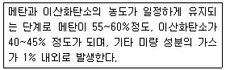
- 호기성 분해단계
- 산생성 단계
- 불안정한 메탄생성 단계
- 안정한 메탄생성 단계
(정답률: 75%)
69. 외부사업 타당성 평가 및 감축량 인증에 관한 지침에 따라 온실가스 감축량에 대한 외부사업 온실가스 감축량 인증절차 일부와 그 수행주체를 나열한 것이다. ( )안의 주체를 순서대로 바르게 나열한 것은?
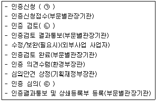
- ㉠ 외부사업 참여자, ㉡ 부문별관장기관, ㉢ 인증위원회
- ㉠ 외부사업 사업자, ㉡ 인증위원회, ㉢ 부문별관장기관
- ㉠ 외부사업 사업자, ㉡ 부문별관장기관, ㉢ 인증위원회
- ㉠ 외부사업 참여자, ㉡ 인증위원회, ㉢ 부문별관장기관
(정답률: 47%)
70. CCS 기술 중 CO2 저장 기술의 구분과 거리가 먼 것은?
- 지중 저장
- 해양 저장
- 지표 저장
- 회수 저장
(정답률: 79%)
71. A기업은 배출구너거래제도에 의무적으로 참여해야 하는 기업이며, 10년 동안 매년 5,000톤의 배출권이 필요하다. 만약 A기업이 아래와 같은 태양광발전사업을 통해 연간 5,000톤의 배출권을 확보할 수 있다면, 다음 중 태양광 발전사업의 한계감축비용과 태양광발전이 배출권을 시장에서 구매하는 대안보다 경제적으로 유리할 지 여부를 옳게 짝지은 것은? (단, 시장에서 배출권을 구매할 수 있는 가격은 배출권 1톤당 5만원)
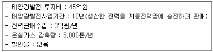
- 3만원 - 태양광 발전이 유리
- 3만원 - 배출권 구매가 유리
- 6만원 - 태양광 발전이 유리
- 6만원 - 배출권 구매가 유리
(정답률: 45%)
72. 연료전지의 특징으로 가장 거리가 먼 것은?
- 천연가스, 메탄올, 석탄가스 등 다양한 연료의 사용이 가능하다.
- 배기가스 중 NOx, SOx 및 분진발생이 거의 없는 편이다.
- 도심부근의 설치가 불가능하고, 송배전시 설비 및 전력손실이 큰 편이다.
- 부하변동에 따른 반응이 신속한 편이며, 설치 형태에 따라 다양한 용도로 사용이 가능한 편이다.
(정답률: 70%)
73. 태양열 이용기술의 시스템별 분류에 관한 설명으로 거리가 먼 것은?
- BATCH형 시스템 : 가격이 저렴하고, 집열과 축열이 동시에 이루어지는 시스템
- 상변화형 시스템 : 열매체의 상변화를 이용한 시스템으로 자연대류형 보다 효율은 낮지만, 제조공정 및 사후관리는 용이
- 자연대류형 시스템 : 집열기와 축열조가 분리되어 있고, 부동액을 열매로 사용하므로 집열기의 동파문제는 걱정하지 않아도 됨
- 강제순환형 시스템 : 낮은 온도차에서도 시스템이 운전되므로 효율이 높으며, 축열조가 실내에 설치되므로 동파의 우려가 없음
(정답률: 42%)
74. 다음 중 온실가스 배출량에 근거하여 2013년까지는 관리업체에 지정되지 않았으나, 2014년부터 관리업체로 지정되는 곳은? (단, 2013년 관리업체는 제외)
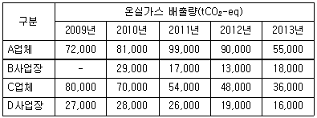
- A 업체
- B 사업장
- C 업체
- D 사업장
(정답률: 49%)
75. 검증기관이 피검증자의 온실가스 배출량 및 에너지 소비량 등에 관한 검증 및 외부사업 온실가스 감축량에 관한 검증수행 시 기본원칙으로 거리가 먼 것은?
- 사실에 근거하여 검증수행
- 피검증자나 관계인의 의견을 충분히 수렴
- 감축량 산정 시 관대한 관점으로 평가
- 합리적 보증이 가능한 수준으로 검증
(정답률: 83%)
76. 소수력 발전의 특징과 거리가 먼 것은?
- 친환경적이다.
- 반영구적인 에너지 자원으로 에너지 안전측면에서 우수하다.
- 지역 사회의 기반시설로서 지역 발전에 공헌할 수 있다.
- 초기 투자비용이 낮고, 자연낙차가 작아도 되므로 운영상 편리한 잇점이 있다.
(정답률: 73%)
77. 바이오에너지의 특징으로 거리가 먼 것은?
- 열에너지, 전기에너지, 직접 연료 등 다양한 형태로의 사용이 가능하다.
- 그 자체로도 저장성은 용이하지 않으며, 다른 에너지 형태로 전환되더라도 저장은 어렵다.
- 청정연료에 해당한다.
- 재생가능한 에너지원에 해당한다.
(정답률: 74%)
78. 폐기물 에너지 및 관련 기술에 관한 내용으로 옳지 않은 것은?
- SRF는 가연성 고체폐기물을 성형하여 제조한 고체 연료이다.
- 폐기물 열분해는 무산소 환원반응이다.
- 화석 연료의 사용을 줄임으로써 온실가스 배출 감축에 기여한다.
- 에너지화 과정에서 2차 오염물질 발생이 없다.
(정답률: 72%)
79. 온실가스ㆍ에너지 목표관리 운영 등에 관한 지침상 활동자료에 대한 설명으로 가장 적합한 것은?
- 사용된 에너지 및 원료의 양, 생산ㆍ제공된 제품 및 서비스의 양, 폐기물 처리량 등 온실 가스 배출량 등의 산정에 필요한 정량적인 측정결과를 의미한다.
- 일정 주기마다 지속적으로 자료를 축적하지 않고 갱신 및 변경이 필요할 시 활동자료를 수집하며, 사업자 자체 개발값을 적용한다.
- 두 개 이상 변수 사이의 상관관계를 나타내는 변수로서 온실가스 배출량 등을 산정하는데 필요한 배출계수, 발열량, 산화율, 탄소함량 등을 의미한다.
- 산전등급에 따라 배출시설 단위별로 구축하거나, 국가 고유값을 사용한다.
(정답률: 34%)
80. 다음 중 이산화탄소 저장 선택지로 가장 적절하지 않은 것은?
- 고갈된 유전 및 가스전
- 지하 대수층(심부 염수층)
- 노천탄광
- 채광 불가능한 탄층
(정답률: 56%)
5과목: 온실가스관련 법규
81. 온실가스ㆍ에너지 목표관리 운영 등에 관한 지침상 관리업체의 소관 관장기관 분류 중 “해양ㆍ수산ㆍ해운ㆍ항만 분야”가 해당하는 곳은?
- 국토교통부
- 해양수산부
- 산업통상자원부
- 환경부
(정답률: 83%)
82. 다음은 저탄소 녹색성장 기본법령상 2014년 1월 1일부터 적용되는 기준이다. ( )안에 알맞은 것은?
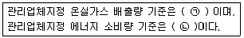
- ㉠ 50kilotonnes tCO2-eq 이상 ㉡ 200terajoules 이상
- ㉠ 87.5kilotonnes tCO2-eq 이상 ㉡ 350terajoules 이상
- ㉠ 125kilotonnes tCO2-eq 이상 ㉡ 350terajoules 이상
- ㉠ 125kilotonnes tCO2-eq 이상 ㉡ 500terajoules 이상
(정답률: 68%)
83. 온실가스 배출권의 할당 및 거래에 관한 법률 시행령상 배출권 거래제 3차 계획기간이후의 무상할당비율은 얼마 이내의 범위에서 이전 계획기간의 평가 및 관련 국제동향 등을 고려하여 정하는가?
- 100분의 90 이내
- 100분의 80 이내
- 100분의 70 이내
- 100분의 60 이내
(정답률: 60%)
84. 다음은 온실가스 배출권거래제 운영을 위한 검증지침상 용어의 뜻이다. ( )안에 알맞은 것은?
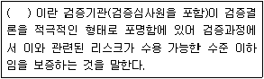
- 총괄적 보증
- 객관적 보증
- 논리적 보증
- 합리적 보증
(정답률: 57%)
85. 저탄소 녹색성장 기본법령상 다음 연도 온실가스 감축, 에너지 절약 및 에너지 이용효율 목표를 통보받은 관리업체는 사업장별 생산설비 현황 및 가동률 등을 포함한 다음 연도이행계획을 전자적 방식으로 언제까지 부문별 관장기관에게 제출하여야 하는가?
- 매년 3월 31일
- 매년 6월 30일
- 매년 9월 30일
- 매년 12월 31일
(정답률: 46%)
86. 저탄소 녹색성장 기본법상 정부가 범지구적인 온실가스 감축에 적극 대응하고 저탄소 녹색성장을 효율적ㆍ체계적으로 추진하기 위하여 중장기 및 단계별 목표를 설정하고 그 달성을 위하여 필요한 조치를 강구해야 하는 사항과 거리가 먼 것은?
- 온실가스 감축 목표
- 에너지 절약 목표 및 에너지 이용효율 목표
- 자원순환 촉진 목표
- 신ㆍ재생에너지 보급 목표
(정답률: 56%)
87. 다음은 저탄소 녹색성장 기본법상 녹색성장 국가전략 수립ㆍ시행에 관한 사항이다. ( )안에 가장 알맞은 것은?
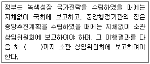
- 1월 15일
- 1월 말일
- 2월 말일
- 3월 말일
(정답률: 20%)
88. 다음은 온실가스ㆍ에너지 목표관리 운영 등에 관한 지침상 목표설정협의체의 구성과 운영에 관한 사항이다 ( )안에 가장 적합한 것은?
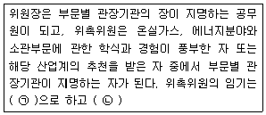
- ㉠ 1년, ㉡ 연임할 수 있다.
- ㉠ 1년, ㉡ 연임할 수 없다.
- ㉠ 2년, ㉡ 연임할 수 있다.
- ㉠ 2년, ㉡ 연임할 수 없다.
(정답률: 59%)
89. 저탄소 녹색성장 기본법상 목표관리제 대상 관리업체가 정부의 개선명령을 이행하지 않았을 경우 부과되는 과태료 기준으로 옳은 것은?
- 1천만원 이하
- 5백만원 이하
- 3백만원이하
- 2백만원 이하
(정답률: 79%)
90. 다음은 온실가스 배출권거래제 운영을 위한 검증지침상 검증기관의 준수사항이다. ( )안에 가장 적합한 것은?
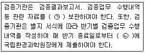
- ㉠ 3년 이상, ㉡ 15일 이내
- ㉠ 3년 이상, ㉡ 30일 이내
- ㉠ 5년 이상, ㉡ 15일 이내
- ㉠ 5년 이상, ㉡ 30일 이내
(정답률: 58%)
91. 온실가스ㆍ에너지 목표관리 운영 등에 관한 지침에서 사용하는 용어의 뜻으로 틀린 것은?
- “배출활동”이란 온실가스를 배출하거나 에너지를 소비하는 일련의 활동을 말한다.
- “기준연도”란 온실가스 배출량 등의 관련정보를 비교하기 위해 지정한 과거의 특정기간에 해당하는 연도를 말한다.
- “연소배출”이란 연료 또는 물질을 연소함으로써 발생하는 온실가스 배출을 말한다.
- “이산화탄소 상당량”이란 이산화탄소에 대한 온실가스의 복사 강제력을 비교하는 단위로서 해당 온실가스의 양에 지구온난화지수를 나누어 산출한 값을 말한다.
(정답률: 62%)
92. 다음은 온실가스 배출권거래제 운영을 위한 검증지침상 외부사업 온실가스 감축량 검증절차이다. ( )안에 단계 순으로 옳게 배열된 것은?
- 현장검증→문서검토→내부심의→검증결과 정리 및 평가
- 문서검토→내부심의→검증결과 정리 및 평가→현장검증
- 문서검토→검증결과 정리 및 평가→현장검증→내부심의
- 문서검토→현장검증→검증결과 정리 및 평가→내부심의
(정답률: 79%)
93. 온실가스ㆍ에너지 목표관리 운영 등에 관한 지침상 관리업체가 관장기관의 지정ㆍ고시에 이의가 있는 경우 이의신청을 할 수 있는 기간의 기준은?
- 고시된 날부터 15일 이내
- 고시된 날부터 30일 이내
- 고시된 날부터 60일 이내
- 고시된 날부터 90일 이내
(정답률: 43%)
94. 저탄소 녹색성장 기본법상 녹색성장위원회의 구성 및 운영에 설명으로 옳지 않은 것은?
- 위원장은 환경부장관이 지명하는 사람이 된다.
- 위원의 임기는 1년으로 하되, 연임할 수 있다.
- 위원장 2명을 포함한 50명 이내의 위원으로 구성한다.
- 위원장은 각자 위원회를 대표하며, 위원회의 업무를 총괄한다.
(정답률: 40%)
95. 다음은 온실가스ㆍ에너지 목표관리 운영 등에 관한 지침상 배출량 등의 산정절차(단계)이다. ( )안에 단계순으로 옳제 배열된 것은?
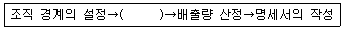
- 배출활동의 확인ㆍ구분→배출활동별 배출량 산정방법론의 선택→배출량 산정 및 모니터링 체계의 구축→모니터링 유형 및 방법의 설정
- 배출활동별 배출량 산정방법론의 선택→모니터링 유형 및 방법의 설정→배출량 산정 및 모니터링 체계의 구축→배출활동동의 확인ㆍ구분
- 배출활동별 배출량 산정방법론의 선택→배출량 산정 및 모니터링 체계의 구축→배출활동의 확인ㆍ구분→모니터링 유형 및 방법의 설정
- 배출활동의 확인ㆍ구분→모니터링 유형 및 방법의 설정→배출량 산정 및 모니터링 체계의 구축→배출활동별 배출량 산정방법론의 선택
(정답률: 42%)
96. 다음은 온실가스 배출권의 할당 및 거래에 관한 법률 시행령상 무상할당 업종의 기준이다. ( )안에 가장 적합한 것은?(관련 규정 개정전 문제로 여기서는 기존 정답인 2번을 누르면 정답 처리됩니다. 자세한 내용은 해설을 참고하세요.)
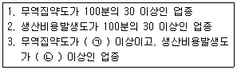
- ㉠ 100분의 5, ㉡ 100분의 10
- ㉠ 100분의 10, ㉡ 100분의 5
- ㉠ 100분의 20, ㉡ 100분의 25
- ㉠ 100분의 25, ㉡ 100분의 20
(정답률: 68%)
97. 저탄소 녹색성장 기본법령상 소관분야 녹색기술ㆍ녹색산업의 표준화 기반을 구축하기 위하여 사업을 추진하고 필요한 지원을 실시할 수 있는 중앙행정기관의 장과 거리가 먼 것은?
- 농림축산식품부장관
- 해양수산부장관
- 여성가족부장관
- 문화체육관광부장관
(정답률: 67%)
98. 다음은 온실가스 배출권의 할당 및 거래에 관한 법률상 배출권 할당의 신청에 관한 사항이다. ( )안에 알맞은 것은?
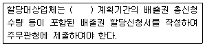
- 매 계획기간 시작 1개월 전 까지
- 매 계획기간 시작 2개월 전 까지
- 매 계획기간 시작 3개월 전 까지
- 매 계획기간 시작 4개월 전 까지
(정답률: 31%)
99. 온실가스ㆍ에너지 목표관리 운영 등에 관한 지침상 매년 조기감축실적으로 인정할 수 있는 전체 총량은 얼마로 하는가?
- 전체 관리업체 배출허용량의 1%
- 전체 관리업체 배출허용량의 5%
- 전체 관리업체 배출허용량의 10%
- 전체 관리업체 배출허용량의 50%
(정답률: 74%)
100. 온실가스 배출권의 할당 및 거래에 관한 법률 시행령상 배출권 거래소의 업무와 거리가 먼 것은?
- 배출권의 매매에 관한 업무
- 배출권의 할당에 관한 업무
- 배출권의 경매 업무
- 배출권 거래시장의 개설ㆍ운영에 관한 업무
(정답률: 75%)